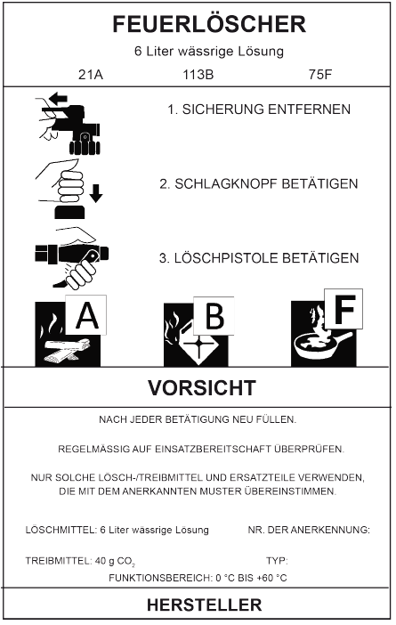

Feuerlöscher bzw. Löschmittel werden vom Hersteller entsprechend der Eignung einer oder mehreren Brandklassen zugeordnet. Diese Zuordnung ist auf dem Feuerlöscher mit Piktogrammen angegeben (siehe Tabelle 1).
Tabelle 1: Brandklassen nach DIN EN 2:2005-01 "Brandklassen", Piktogramme nach DIN EN 3-7:2007-10 "Tragbare Feuerlöscher – Teil 7: Eigenschaften, Leistungsanforderungen und Prüfungen"
| Piktogramm | Brandklasse |
| Brandklasse A: Brände fester Stoffe (hauptsächlich organischer Natur), verbrennen normalerweise unter Glutbildung Beispiele: Holz, Papier, Stroh, Textilien, Kohle, Autoreifen |
|
| Brandklasse B: Brände von flüssigen oder flüssig werdenden Stoffen Beispiele: Benzin, Öle, Schmierfette, Lacke, Harze, Wachse, Teer Hinweis: Sicherheitsdatenblatt beachten |
|
| Brandklasse C: Brände von Gasen Beispiele: Methan, Propan, Wasserstoff, Acetylen, Erdgas |
|
| Brandklasse D: Brände von Metallen Beispiele: Aluminium, Magnesium, Lithium, Natrium, Kalium und deren Legierungen |
|
| Brandklasse F: Brände von Speiseölen und -fetten (pflanzliche oder tierische Öle und Fette) in Frittier- und Fettbackgeräten und anderen Kücheneinrichtungen und -geräten |
Für Brände von elektrischen Anlagen und Betriebsmitteln wird in DIN EN 2:2005-01 "Brandklassen" keine eigenständige Brandklasse ausgewiesen.
Feuerlöscher nach DIN EN 3-7:2007-10 "Tragbare Feuerlöscher – Teil 7: Eigenschaften, Leistungsanforderungen und Prüfungen", die für die Brandbekämpfung im Bereich elektrischer Anlagen geeignet sind, werden mit der maximalen Spannung und dem notwendigen Mindestabstand gekennzeichnet, z. B. bis 1000 V, Mindestabstand 1 m.
(1) Das Löschvermögen wird durch eine Zahlen-Buchstabenkombination auf dem Feuerlöscher angegeben. In dieser Zahlen-Buchstabenkombination bezeichnet die Zahl die Größe des erfolgreich abgelöschten Norm-Prüfobjektes und der Buchstabe die Brandklasse (siehe Abbildung 1).

Abb. 1: Beispiel für die Beschriftung eines Feuerlöschers durch den Hersteller, in Anlehnung an DIN EN 3-7:2007-10 "Tragbare Feuerlöscher –Teil 7: Eigenschaften, Leistungsanforderungen und Prüfungen"
Hinweise:
1. Die Buchstaben A, B, F bezeichnen die jeweilige Brandklasse, für die der Feuerlöscher geeignet ist. Die davor stehenden Zahlen 21A, 113B, 75F in Abbildung 1 geben das Löschvermögen in der jeweiligen Brandklasse, bestimmt an einem Norm-Prüfobjekt entsprechender Größe, an.
2. Es kann für die Brandklassen A und B mit Hilfe der Tabelle 2 in Löschmitteleinheiten (LE) umgerechnet werden.
3. Für die Brandklassen C und D wird nur die Eignung des Feuerlöschers ohne Bestimmung des Löschvermögens festgestellt.
4. Für die Brandklasse F gibt die Zahl 75 in Abbildung 1 an, dass unter Prüfbedingungen ein Brand mit einem Volumen von 75 Litern Speisefett/-öl erfolgreich abgelöscht werden kann. Feuerlöscher der Brandklasse F sind mit einem Löschvermögen von 5F, 25F, 40F und 75F erhältlich. Eine Umrechnung in Löschmitteleinheiten (LE) erfolgt nicht.
(2) Da das Löschvermögen nicht addiert werden kann, wird zur Berechnung der Anzahl der erforderlichen Feuerlöscher für die Brandklassen A und B eine Hilfsgröße, die "Löschmitteleinheit (LE)" verwendet. Dem im Versuch ermittelten Löschvermögen der Feuerlöscher wird dadurch eine bestimmte Anzahl von Löschmitteleinheiten zugeordnet, siehe Tabelle 2. Diese Werte können dann je Brandklasse addiert werden.
Tabelle 2: Zuordnung des Löschvermögens zu Löschmitteleinheiten (Zuordnung von Feuerlöschern der Grundausstattung gemäß Punkt 5.2)
| Löschvermögen (Rating gemäß DIN EN 3-7:2007-10) |
||
| LE | Brandklasse A | Brandklasse B |
| 1 | 5A | 21B |
| 2 | 8A | 34B |
| 3 | 55B | |
| 4 | 13A | 70B |
| 5 | 89B | |
| 6 | 21A | 113B |
| 9 | 27A | 144B |
| 10 | 34A | |
| 12 | 43A | 183B |
| 15 | 55A | 233B |
(3) Werden Feuerlöscher für verschiedene Brandklassen bereitgestellt, dann muss das Löschvermögen für jede der vorhandenen Brandklassen ausreichend sein.